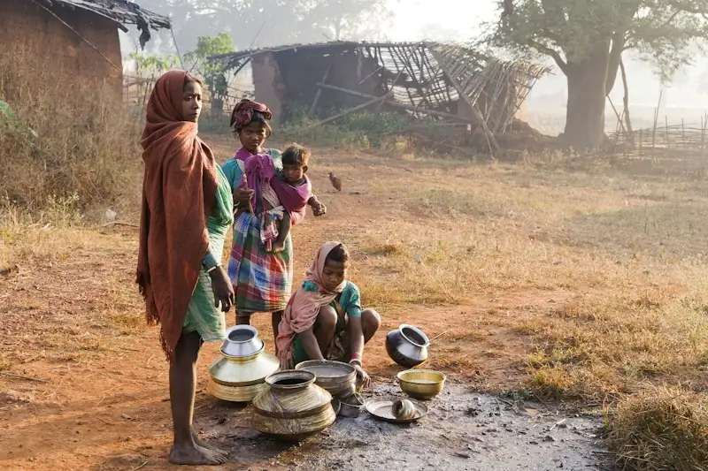

Nature gave us life. Our duty is to give every living being a happy, equal future.
We work for Net Zero, measurable social value and every child's right to quality education.
Green Week Mission
Small act. Big impact. Ten green gift actions for the festive season, ranked by impact — from planting a sapling to re-gifting and reusable wraps. Pick at least one, do it this week, and share it with #GreenWeekMission.
A Zero Cube programme led by Director Rtn Rajendrakumar Saraf.
- Pick at least one action from the poster
- Do it during the week
- Share a photo with #GreenWeekMission #ZeroCube
We appreciate every Green Gifter. Each mindful choice adds up to a cleaner, healthier planet.
Green Week 2026 has ended — thank you to every Green Gifter. The habits continue all year.

If I take the pledge, it makes a difference.
One person's action, multiplied by many people, changes everything. Pledge to cut your footprint and grow your handprint — in two minutes — and join our Climate Duty Bearers on the Wall of Honour.
indicative estimate
given directly, not to us
One ecosystem. Every member takes part.
We are building a group of experts, MSME vendors, schools, institutions, corporates, NPOs, students and village groups. As members, you work on real tasks together — and together we make change happen.
How the ecosystem works
- Pick your capacityExpert, MSME, school, institution, corporate, NPO, student or village group.
- Become a memberOne clear annual fee; learning stays free for everyone. Join the waitlist now — no payment until our bank account is active.
- Take partJoin working groups, training, assessments and field projects.
- Grow the ecosystemYour work links with other members and is reported openly.
Experts
- You contribute
- Give time and know-how as mentors, trainers, assessors and reviewers.
- You get
- Associate recognition, assessor training (with conflict-of-interest declaration) and a certificate of hours.
No fee — give time
See this membershipMSME Vendors
- You contribute
- Share supplier data and take practical steps to cut value-chain (Scope 3) emissions.
- You get
- An annual Scope 3 readiness check, 2 staff seats in the learning series and data templates.
₹30,000 / year
See this membershipSchools
- You contribute
- Bring climate literacy and quality learning into classrooms.
- You get
- A school toolkit, teacher orientation and the Net Zero School pathway at member rates. Government and low-fee schools: free or sliding scale.
₹10,000 / year
See this membershipInstitutions & Colleges
- You contribute
- Share faculty expertise, host campus chapters and support field work.
- You get
- Free Academy courses for all, plus members-only sessions and campus roles.
₹10,000 / year
See this membershipCorporates
- You contribute
- Fund programmes, invite your suppliers and give employee volunteering days.
- You get
- “Climate Partner” listing, Scope 3 learning seats and a quarterly impact note.
From ₹50,000 / year
See this membershipNPOs
- You contribute
- Deliver projects on the ground and share honest evidence of change.
- You get
- Verification badge, project listing with your own donate link and an annual SROI report — one fee, no commission.
From ₹1,500 / year · final fees announced soon
See this membershipStudents & Individuals
- You contribute
- Volunteer, join the Webinar Crew, collect field data and spread the word.
- You get
- Free Academy courses and webinars, digital badges, mentor circles and the bulletin.
From ₹1,000 / year
See this membershipVillage groups
Villages never pay and need no membership: village Net Zero certification is funded through CSR. Certified villages can join the network free.
See village membershipOne family, one planet, one future
We humans have a duty to build a happy, equal world for every living being — with the help of nature. Vasudhaiva Kutumbakam: the world is one family, including the children not yet born.
Read our beliefHappy, healthy living in harmony with nature.
Good work made measurable and trusted.
An equal right for every child.
Society's changemakers, seen and supported.
Three focus areas
Net Zero comes first, then SROI and Quality Education.

1 · Net Zero & Scope 3
We help companies and their MSME suppliers measure and cut value-chain emissions — and live healthier, low-carbon lives.
Learn more →
2 · SROI
We show how much social value each rupee creates, so donors and companies can trust the results.
Learn more →
3 · Quality Education
Education is every child's equal right. We support schools, teachers and students — with climate responsibility.
Learn more →Four simple steps
Learn
Free webinars and Climate Academy courses — open to everyone.
Measure
We measure footprints, Scope 3 and social value with clear methods.
Act
Companies, MSMEs, schools and villages take practical steps.
Report
Results are certified under our criteria and published openly.
Zero Cube Climate Academy
Learn, then participate, then act. Free webinars and short self-paced courses with completion badges — climate basics and the Pledge, Net Zero for MSMEs, teaching climate, Village Net Zero and SROI.
Founders' prior work 2025-26 · before incorporation
Zero Cube today
Founders' track record: 34 Net Zero certificates (1 Gram Panchayat, 33 clubs) issued in 2025-26 in association with Rotary District 3131's Environment Team, before Zero Cube was incorporated on 28 September 2026. They are not Zero Cube certificates, and no current partnership or MoU with Rotary is implied.

See the social return on every rupee
NPOs do society's work in line with the SDGs. SROI shows donors, in clear numbers, the value their gift creates — with a transparent report.
What members do together
Each member brings a skill. Together the work adds up.
Representative imageRepresentative image Representative imageRepresentative image
Representative imageRepresentative imageJoin and support the mission
Pick the way that suits you. Every enquiry gets a personal reply.
 Representative image
Representative image Representative image
Representative imageTalk to us
Email ZEROCUBECIF@GMAIL.COM — membership, CSR, Scope 3, SROI, schools or anything else.